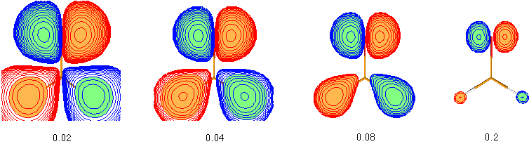

#P HF/STO-3G scf=tight pop=full gfinput HF/STO-3G//HF/STO-3G sp formaldehyde 0 1 C1 O2 1 r2 H3 1 r3 2 a3 H4 1 r3 2 a3 3 180.0 r2=1.21672286 r3=1.10137241 a3=122.73666566 |  |
Remember that the output files can become quite sizeable with this output option.

It can clearly be seen that the more diffuse parts of the molecular orbitals centered around the hydrogen atoms in the lower part of the pictures is dominating at low cutoff values such as 0.02, but that the more compact upper part describing an oxygen centered lone pair becomes more dominating at higher cutoff values such as 0.2. This illustrates that the question of "orbital shape" is difficult to answer even in a qualitative way.